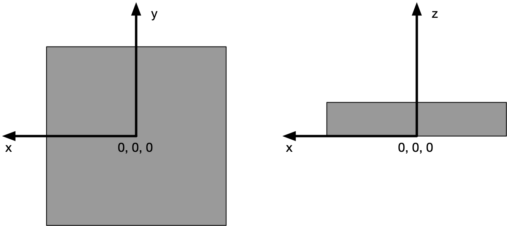

NXbeam_stop¶
Status:
base class, extends NXobject
Description:
A device that blocks the beam completely, usually to protect a detector.
Beamstops and their positions are important for SANS and SAXS experiments.
Symbols:
No symbol table
- Groups cited:
NXcylindrical_geometry, NXgeometry, NXoff_geometry, NXtransformations
Structure:
@default: (optional) NX_CHAR
Declares which child group contains a path leading to a NXdata group.
It is recommended (as of NIAC2014) to use this attribute to help define the path to the default dataset to be plotted. See https://www.nexusformat.org/2014_How_to_find_default_data.html for a summary of the discussion.
description: (optional) NX_CHAR
description of beamstop
Any of these values:
circular|rectangularsize: (optional) NX_FLOAT {units=NX_LENGTH}
Size of beamstop. If this is not sufficient to describe the beam stop use NXoff_geometry instead.
x: (optional) NX_FLOAT {units=NX_LENGTH}
x position of the beamstop in relation to the detector. Note, it is recommended to use NXtransformations instead.
y: (optional) NX_FLOAT {units=NX_LENGTH}
y position of the beamstop in relation to the detector. Note, it is recommended to use NXtransformations instead.
distance_to_detector: (optional) NX_FLOAT {units=NX_LENGTH}
distance of the beamstop to the detector. Note, it is recommended to use NXtransformations instead.
status: (optional) NX_CHAR
Any of these values:
in|outdepends_on: (optional) NX_CHAR
NeXus positions components by applying a set of translations and rotations to apply to the component starting from 0, 0, 0. The order of these operations is critical and forms what NeXus calls a dependency chain. The depends_on field defines the path to the top most operation of the dependency chain or the string “.” if located in the origin. Usually these operations are stored in a NXtransformations group. But NeXus allows them to be stored anywhere.
The reference point of the beam stop is its center in the x and y axis. The reference point on the z axis is the surface of the beam stop pointing towards the source.
GEOMETRY: (optional) NXgeometry
DEPRECATED: Use the field depends_on and NXtransformations to position the beamstop and NXoff_geometry to describe its shape instead
engineering shape, orientation and position of the beam stop.
OFF_GEOMETRY: (optional) NXoff_geometry
This group describes the shape of the beam line component
CYLINDRICAL_GEOMETRY: (optional) NXcylindrical_geometry
This group is an alternative to NXoff_geometry for describing the shape of the beam stop.
TRANSFORMATIONS: (optional) NXtransformations
This is the group recommended for holding the chain of translation and rotation operations necessary to position the component within the instrument. The dependency chain may however traverse similar groups in other component groups.
Hypertext Anchors¶
List of hypertext anchors for all groups, fields, attributes, and links defined in this class.

{kind=link}